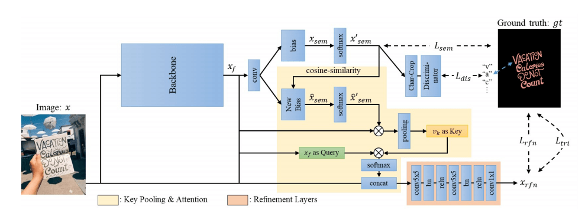
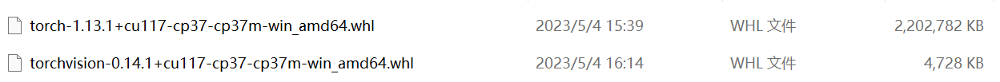
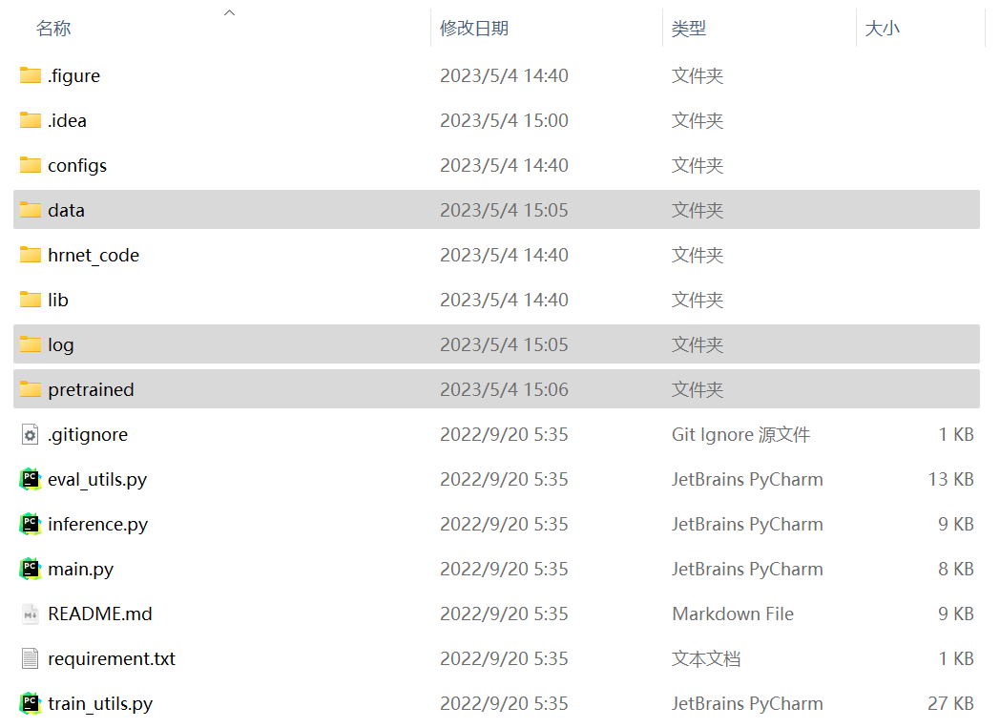
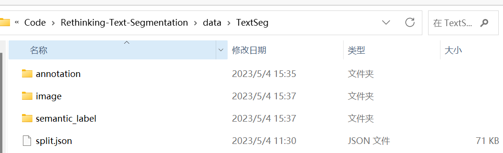
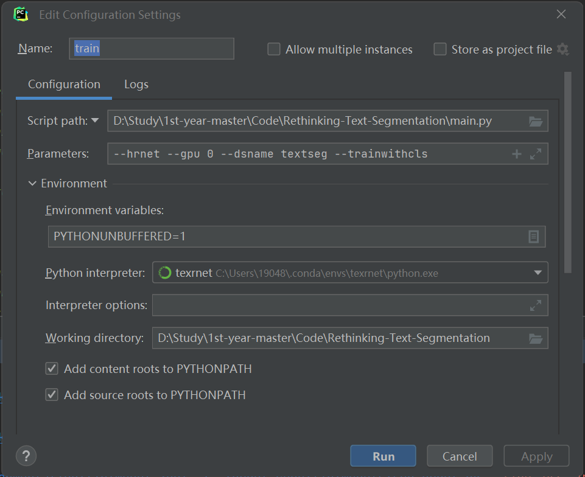
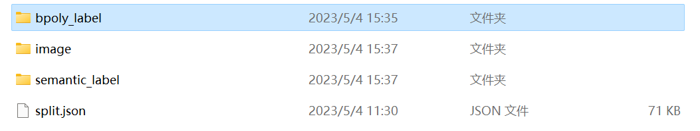
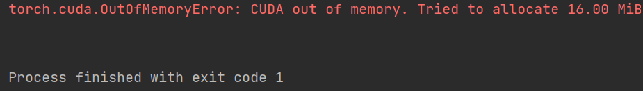

资源
笔记
文本分割（text segmentation）是很多任务的先决条件！如文本样式迁移（text style transfer）和场景文本移除（scene text removal）。
TextSeg
最近一次公共文本分割挑战在 2013-2015 年，由 ICDAR 主办。只有数据集：
- Total Text
- COCO TS
- MLT_S
都只有场景文本，没有艺术设计文本。
目前数据集太少了啊啊啊啊！但是我们提出了一种新的数据集 TextSeg！
-
4024 张图像
- 2646 训练集
- 340 验证集
- 1038 测试集
-
具有六种类型的注释：
-
单词 word
-
字符 character
-
边界多边形 bounding polygons
-
蒙版 masks
-
转录 transcriptions
-
阴影、3D、光晕等也进行了注释
-
-
先进之处：
- 来自不同来源，样式更多
- 注释更全面
- accurate masks 更准确
TexRNet
早期都是用阈值法进行分割，对复杂颜色和纹理的场景文本图像就 GG。深度学习方法：SMANet。
提出了一种新的文本分割网络：TexRNet！

- 适应了文本的独特特性，如非凸边界、不同纹理等。
- DeeplabV3+ 或 HRNet
- ResNet101-DeeplabV3+ 和 HRNetV-W48 是语义分割领域的里程碑和最先进的作品
- 有效的网络模块：关键特征池（key features pooling）和基于注意力的相似性检查（attention-based similarity checking）
- 关键特征池：使用余弦相似性学习文本纹理
- 基于注意力的相似性检查，使用一个注意力层，用 作为关键字， 作为查询，并通过点积和 softmax 来计算查询关键字的相似性 ：
- 引入了**三映射（trimap loss）和鉴别器（glyph discriminator）**损失
-
关注边界的损失函数将进一步提高文本的精度
- \mathcal L_{tri}=\mathrm{WCE}(x_{rfn},x_{gt},w_{tri})\\\mathrm{WCE}(x,y,m)=-\frac{\sum^m_{j=1}w_j\sum^c_{j=1}x_{i,j}\log(y_{i,j})}{\sum^n_{j=1}w_j}
- 是文本边界上值为 1、其他地方为 0 的二进制映射
- 是由空间映射 加权的 和 之间的交叉熵
- \mathcal L_{tri}=\mathrm{WCE}(x_{rfn},x_{gt},w_{tri})\\\mathrm{WCE}(x,y,m)=-\frac{\sum^m_{j=1}w_j\sum^c_{j=1}x_{i,j}\log(y_{i,j})}{\sum^n_{j=1}w_j}
-
预训练用于字符识别的分类器，有 37 个类，包含 26 个字母，10 个数字和 misc
-
最终损失函数：
-
实验结果：
| Method | TextSeg(Ours) | ICDAR13 FST | COCO_TS | MLT_S | Total-Text |
|---|---|---|---|---|---|
| 指标 | fgIoU/F-score | fgIoU/F-score | fgIoU/F-score | fgIoU/F-score | fgIoU/F-score |
| DeeplabV3+ | 84.07/0.914 | 69.27/0.802 | 72.07/0.641 | 84.63/0.837 | 74.44/0.824 |
| HRNetV2-W48 | 85.03/0.914 | 70.98/0.822 | 68.93/0.629 | 83.26/0.836 | 75.29/0.825 |
| HRNetV2-W48 + OCR | 85.98/0.918 | 72.45/0.830 | 69.54/0.627 | 83.49/0.838 | 76.23/0.832 |
| Ours: TexRNet + DeeplabV3+ | 86.06/0.921 | 72.16/0.835 | 73.98/0.722 | 86.31/0.830 | 76.53/0.844 |
| Ours: TexRNet + HRNetV2-W48 | 86.84/0.924 | 73.38/0.850 | 72.39/0.720 | 86.09/0.865 | 78.47/0.848 |
代码
TextSeg
我们的数据集（TextSeg）仅供学术界使用，不能用于任何商业项目和研究。要下载数据，请向 textseg.dataset@gmail.com 发送请求电子邮件，并告诉我们您隶属于哪所学校。
但是网上居然还是能找到下载地址……：TextSeg 大规模文本检测及分割数据集 - 数据集下载 - 超神经 (hyper.ai)

-
image.tar.gz包含 4024 张图像。 -
annotation.tar.gz与图像对应的标签。包括以下三种类型的文件：
[dataID]_anno.json包含所有单词和字符级别的翻译以及边界多边形。[dataID]_mask.png包含所有字符掩码。字符掩码标签值将从 1 到 n 排序。标签值 0 表示背景，255 表示忽略。[dataID]_maskeff.png包含所有具有效果的字符掩码。Adobe_Research_License_TextSeg.txt许可证文件。
-
semantic_label.tar.gz包含所有字级（语义级）掩码。它包含：
[dataID]_maskfg.png0 表示背景，100 表示单词，200 表示单词效果，255 表示忽略。（也可以使用[dataID]_maskfg.png、[dataID]_mask.png和[dataID]_maskeff.png)
-
split.json训练集，验证集和测试集的官方拆分。 -
[可选]我们论文中使用的旧版本标签。可以下载它以复制我们的论文结果。
semantic_label_v1.tar.gz
TexRNet
有两种 Backbone，效果各有千秋？
- HENetV-W48
- DeeplabV3+
从 TexRNet - Google Drive 下载相应内容：
-
测试：
texrnet_hrnet.pth或texrnet_deeplab.pth -
训练：
init/*
配置
- 新建一个 conda 环境：
1 | |
1 | |
- 使用离线安装方式安装
pytorch（被坑了 n 次逐渐熟练了 orz，还是离线安装的方式好使），从 download.pytorch.org/whl/torch_stable.html 下载对应版本的pytorch和torchvision：
torch-1.13.1+cu117-cp37-cp37m-win_amd64.whltorchvision-0.14.1+cu117-cp37-cp37m-win_amd64.whl
不知道为什么今天 edge 下载得特别慢，用迅雷了。

1 | |
1 | |

-
在仓库目录下，将
requirement.txt里的torch==1.6和torchvision==0.7删掉，然后执行：
1 | |
- 在仓库目录下，新建好下列文件夹：
pretrainedpretrained/init
datalog

- 放置数据库在
data/TextSeg中：

测试
-
先改代码！Windows 下踩坑：Pytorch 报错解决——（亲测有效）RuntimeError: Distributed package doesn‘t have NCCL built in_康康好老啊的博客-CSDN 博客。pycharm 中
ctrl+shift+r将所有nccl替换为gloo -
设置参数：
--eval --pth pretrained/texrnet_hrnet.pth --hrnet --gpu 0 --dsname textseg

- 能跑，GPU 风扇疯狂转，吓得我赶紧停了😅。还是用服务器吧呜呜呜……

训练
- 设置参数：
--hrnet --gpu 0 --dsname textseg --trainwithcls

- 踩坑，在
data\TextSeg中，把annotation文件夹名称修改为bpoly_label

应该能 train 吧，显示显存不够是真的牛逼😅。还是用服务器吧呜呜呜……（是不是调成 gloo 的问题？该好好学 linux 了呜呜呜）

我说婷婷！在 train_utils.py 里把 cfg.DATA.NUM_WORKERS_PER_GPU 调小就又可以跑了！
1 | |
好吧还是跑不了，giao！ File “D:\Study\XXXXX\Rethinking-Text-Segmentation\lib\torchutils.py”, line 262, in _call_ return y UnboundLocalError: local variable ‘y’ referenced before assignment
阅读
感觉这个仓库的代码写的很隐秘……一层又一层的。
main.py
--eval --pth pretrained/texrnet_hrnet.pth --hrnet --gpu 0 --dsname textseg
表示：
- 开启 eval 模式
- 预训练模型路径：
pretrained/texrnet_hrnet.pth - 使用 HRNet 模型
- 使用 0 号 GPU
- 数据集：
textseg
设置 parser 参数：
| name | type | default | help |
|---|---|---|---|
| –debug | bool | False | 是否启动 debug 模式 |
| –hrnet | bool | False | 是否使用 HRNet 模型 |
| –eval | bool | False | 是否开启 eval 模式 |
| –pth | str | 保存的权重文件路径，即预训练模型的路径 | |
| –gpu | 使用哪些 GPU | ||
| –port | int | 11233 | 分布式处理的端口号 |
| –dsname | str | ‘textseg’ | 数据集名称，可选：‘textseg’、‘cocots’、‘mlt’、‘icdar13’、‘totaltext’ |
| –trainwithcls | bool | False | 是否使用分类器来训练 |
istrain = not args.eval，如果不开启 eval 模式，那就是开启 train 模式。
1 | |
开跑时，会显示各种参数的情况：
1 | |